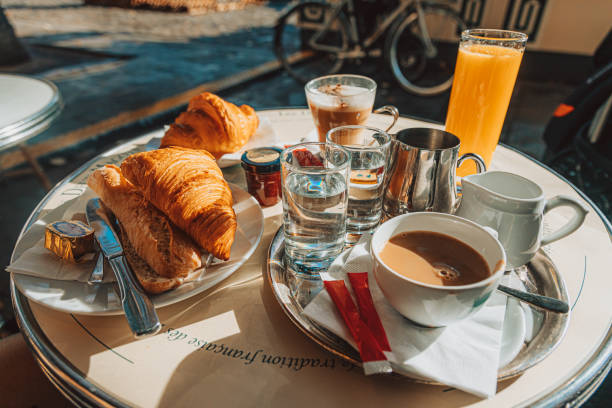

My springtime adventure in Paris began with the soft pink blossoms of cherry trees lining the Champs-Élysées...
Hidden Cafés and Local Secrets
While most tourists flock to the famous cafés of Saint-Germain-des-Prés, I discovered a charming little spot called...

Beyond the Eiffel Tower
Venturing beyond the typical tourist spots led me to the enchanting Canal Saint-Martin neighborhood...